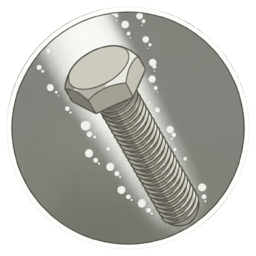

What is Parsing?
Parsing is the process of analyzing a string of symbols, either in natural language, computer languages or data structures, conforming to the rules of a formal grammar.

O(n) Optimal Traversal
Top-Down Predictive Parsing
LL(1) parsers work by building the parse tree from the top down, from the start symbol to the leaves. The "(1)" denotes using a single lookahead token to make parsing decisions, ensuring deterministic execution for specific grammar subsets.
- check_circle No Left Recursion allowed
- check_circle Grammar must be Left-Factored
- check_circle Constructed via First and Follow sets
Bottom-Up Shift-Reduce Parsing
LR(0) parsers build the parse tree from the bottom up, identifying the smallest units and reducing them toward the start symbol. They use a Finite State Automaton (DFA) to track the state of the stack without needing lookahead for initial decisions.
- check_circle Handles more grammars than LL(1)
- check_circle State-based transition table
- check_circle Foundation for SLR, LALR, and LR(1)
Step-by-Step Guide
Enter Grammar
Navigate to the LL(1) or LR(0) tab and enter your context-free grammar productions. Use uppercase for non-terminals and lowercase / symbols for terminals.
Generate Tables
Click "Compute" to generate FIRST/FOLLOW sets, parsing tables, item sets, and all intermediate results.
Parse Input
Enter an input string and watch the parser simulate step-by-step, showing stack operations, actions, and the parsing trace.
Supervisor

Jian
Managed the UI design and optimized First-Set parser calculations
Shanita
Designed visual assets while computing Follow-Set grammar transitions
Jiaur
Conducted system testing and authored comprehensive technical documentation
Naim
Engineered LR(0) item collections for automated state machine transitions
Habib
Constructed canonical parsing tables to ensure efficient syntax analysis